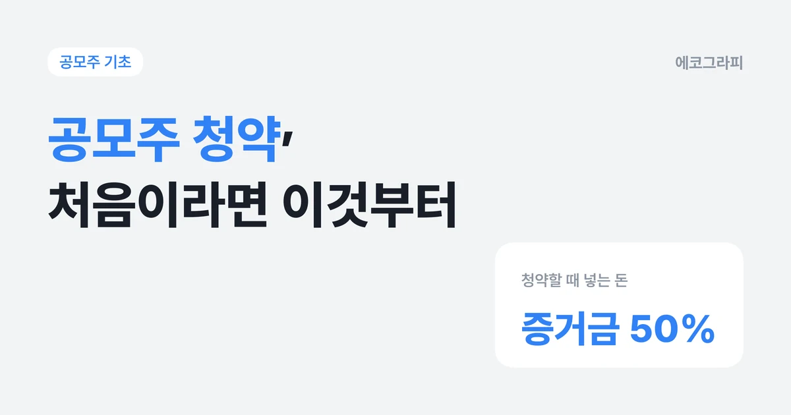
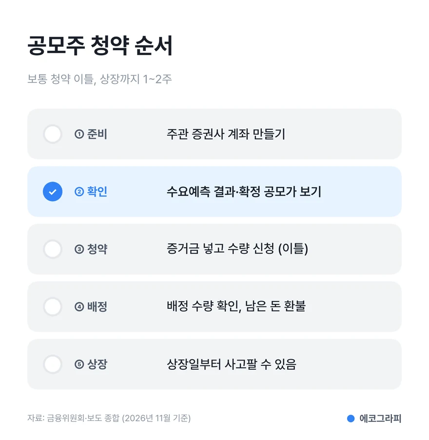
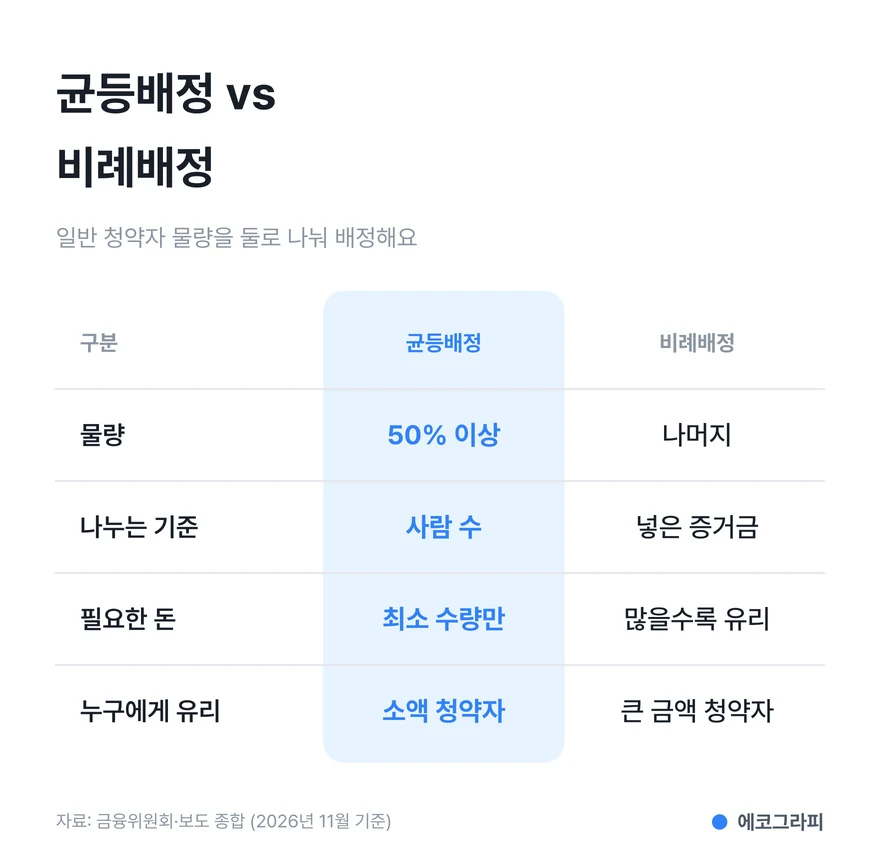
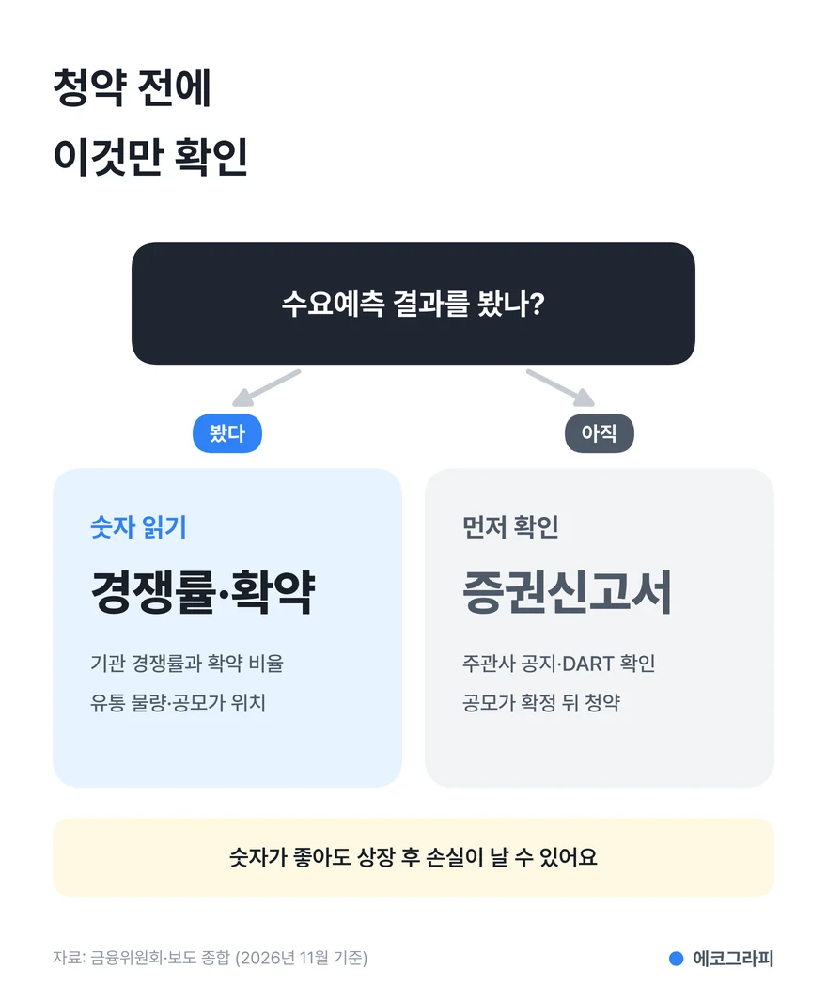
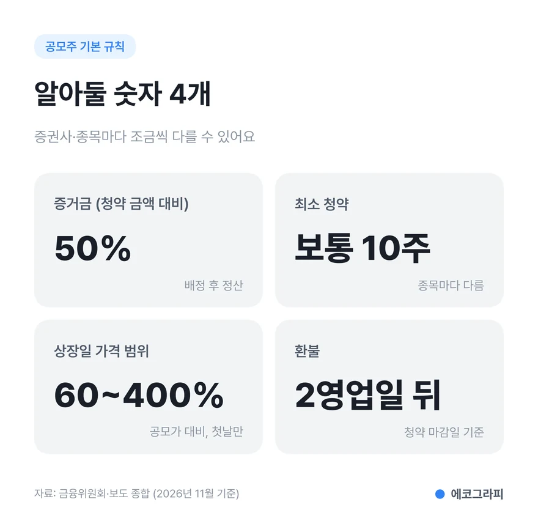

회사가 주식시장에 처음 상장하면서 새로 파는 주식을 공모주라고 해요. 상장 전에 정해진 가격(공모가)으로 일반 투자자도 신청할 수 있는데, 이걸 청약이라고 해요. 상장 후 주가가 공모가보다 높으면 차익이 생기고, 낮으면 손실이 나요.

일반 청약자에게 돌아가는 주식은 두 방식으로 나눠요. 균등배정은 최소 수량 이상 청약한 사람에게 똑같이 나누고, 비례배정은 넣은 증거금이 많을수록 더 받아요.

소액이라면: 최소 수량만 청약해도 균등배정을 받을 수 있어요. 청약자가 많으면 1주도 못 받거나 추첨으로 정해질 수 있어요.
일반 청약 전에 기관투자자들이 먼저 가격을 써내는 수요예측을 해요. 그 결과로 공모가가 확정돼요.


상장 첫날은 주가가 공모가의 60~400% 범위에서 움직일 수 있어서 변동이 아주 커요. 경쟁률이 높았다고 꼭 오르는 것도 아니에요. 회사 사업 내용과 실적은 DART의 증권신고서에서 확인할 수 있어요.
지금 해볼 것: 이번 주 청약 일정과 주관사를 확인하고, 필요한 증권사 계좌가 있는지 미리 체크해 보세요. 일정은 매주 '이번 주 공모주' 글에서 정리해요.
아니에요. 상장 후 공모가보다 낮게 거래되는 종목도 있어요. 청약은 투자이고, 손실 가능성이 있어요.
종목이 정한 최소 청약 수량(보통 10주)의 증거금이면 돼요. 공모가 1만 원, 10주라면 증거금 5만 원이에요.
명의가 다르면 각자 청약할 수 있어요. 같은 사람이 여러 증권사에서 같은 종목을 청약하는 중복 청약만 안 돼요.
국내 상장주식이라 소액주주의 매매차익은 비과세예요. 팔 때 증권거래세는 내요.
※ 2026년 11월 기준으로 정리한 글입니다. 공모 일정과 공모가는 증권신고서 정정으로 바뀔 수 있으니 청약 전 주관 증권사 공지와 DART 증권신고서를 꼭 확인하세요. 특정 종목의 청약·매수·매도 권유가 아닙니다.